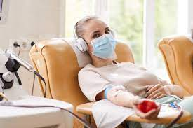
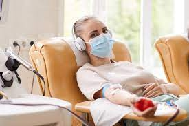

What Donors Say
“I love donating blood. It’s so simple, and it does so much.” – Rita R
“I donate because I want people to have access to the blood they need when they most need it. I am thankful that I can be part of helping during a time of need.” – Sadie G
“Perhaps the greatest reward from donating blood is knowing your blood, part of who you are, lives on in those around you. So, for those who are thinking of donating, understand you would truly be offering the most beautiful part of yourself for the benefit of those less fortunate.” – Shane P
"I love people! I’m the kind of person who drops everything for people in need, and donating blood every chance I get is my favorite way to help others. It’s simple, it doesn’t cause me any inconvenience, and I have a sure way of knowing that my donation makes a difference.” – Kendrah Y
“I encourage everyone who is physically capable to be a regular donor. You can't believe how much it means to people in need.” – Randy J
 


What Blood Recipients Say
“I, along with my family, want to personally thank each and every person who has donated blood. Whether somebody close to you has needed blood or not, you, as a donor, need to know how important you are.” - Ryan G
“I feel I owe my life to the thoughtful acts of blood donors, and I am proud to say I regularly donate blood.” - Chris S
“They didn’t just give me units of blood, they gave me my life. I owe them everything that I have and everything that I am, because their donation is priceless.” - Heather K
“Whether it was when I was giving blood as a donor earlier in my career, to now being a recipient of that blood, it's just an amazing feeling. Paying it forward was really important, and something that I would promote for everyone.” - Bahar B
“When you give blood, you truly do give life.” - Julie D